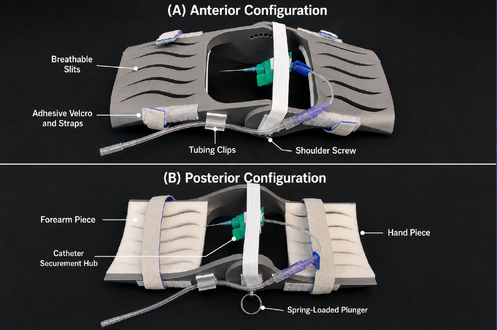
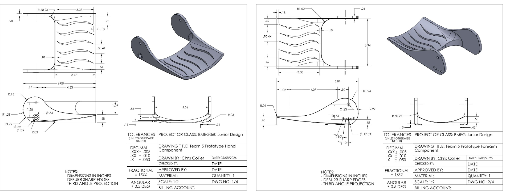
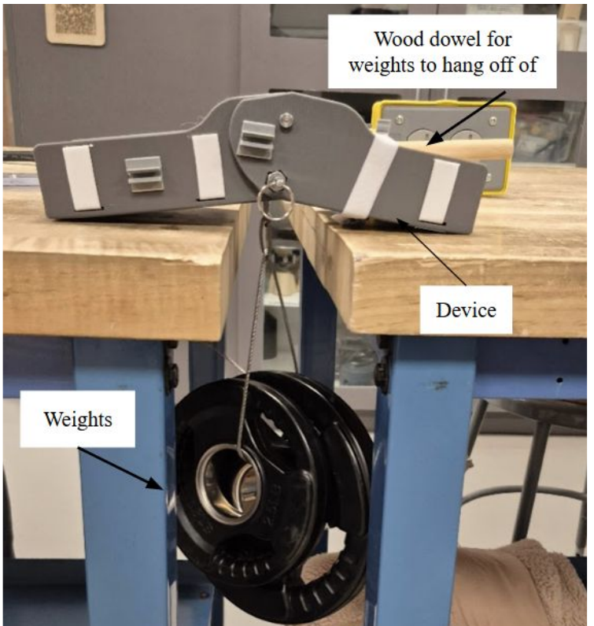
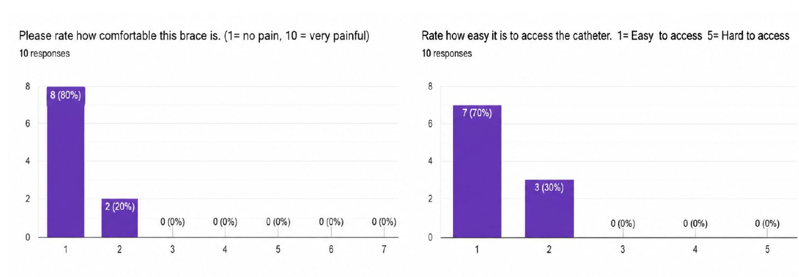

A two-piece wrist brace that locks the wrist between 0° and 20° extension for radial arterial line placement, with integrated catheter and tubing securement. Designed, prototyped, and verified against ISO and IEC standards.
Radial arterial line placement requires the wrist held in extension so the artery is tensioned and close to the surface. In practice this is improvised with rolled towels and tape, which drift during the procedure and leave the catheter and tubing unsecured.
Our team designed a brace that holds a locked, adjustable extension angle and integrates catheter securement into the same device. The prototype passed four of five verification requirements and all user validation criteria, but failed on cost, which is the deciding constraint for a disposable clinical product.

Three functional requirements drove the design: maintain 0°–20° wrist extension under load, keep the insertion site openly accessible, and hold structural compliance. Adaptability was specified anthropometrically — wrist widths of 53.8–69.9 mm and hand lengths of 73.8–97.1 mm — alongside sub-two-minute setup, biocompatibility, and sterilization compatibility.
An initial pool of 37 components was narrowed to six through successive requirement screens — extension angle and catheter access first, then a three-component construction limit, cost, and structural compliance. The survivors formed two viable concepts, and a weighted decision matrix selected the posterior brace at 29.4 over the anterior at 28.4.

The device resolves to a hand piece and a forearm piece joined by shoulder screws, with a ring-grip spring plunger setting and locking the extension angle. Breathable slits, adhesive foam padding, velcro straps, and tubing clips complete the assembly. Prototype components were 3D printed in PETG with brass heat-set inserts.

The brace was spanned between two tables at 20° extension and loaded with a suspended 7.5 lb weight, holding its angle without yielding. Tube protection and sub-two-minute setup also passed. Cost was the single failure: at $45.25 per unit, the device sits well above the $10 target for a disposable product.

Ten users applied the device without prior instruction. All ten fitted and adjusted it in under two minutes and rated it intuitive. Eight of ten gave the lowest possible discomfort score, and seven of ten rated catheter access easiest on the scale, with the insertion site remaining visible throughout.
The design meets its clinical function but not its economics. Moving to injection-molded polypropylene would cut per-unit cost substantially, and the steel plunger and shoulder screws are the next targets — they account for roughly $20 of the build and also carry MRI compatibility risk flagged in the FMEA. Remaining work is quantitative flow rate testing and clinical evaluation with practitioners; without a viable cost path, the honest recommendation is not to proceed.